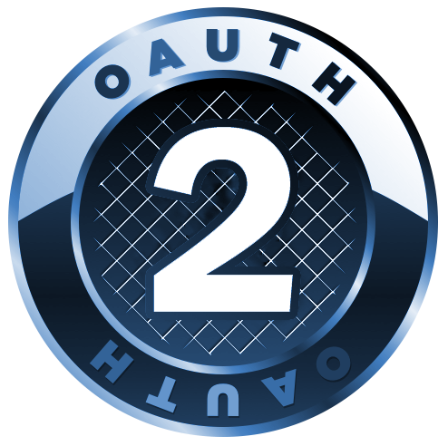
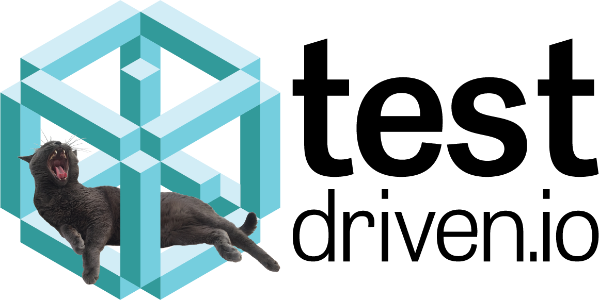

class: center, middle # Introduction to OAuth 2.0<br>and OpenID Connect  <div> <small>Presented By<br><a href="https://mherman.org">Michael Herman</a><br><a href="https://twitter.com/mikeherman">@mikeherman</a> </span> </div> --- ### Day 1 -- ##### (1) Intro (~ 10 minutes) - About Me - Objectives -- ##### (2) Theory (~ 2 hours) - Authentication vs Authorization - OAuth - What is OAuth? - OAuth 2.0 flow - History of OAuth - Grant types - Authorization before OAuth -- ##### (3) Practice (~ 5 hours) - Developing an OAuth 2.0 Server with Node --- ### Day 2 -- ##### (1) Theory (~ 1 hour) - Day 1 Review - OpenID Connect - What is OpenID Connect? - How does OpenID work with OAuth 2.0? - JSON Web Tokens (JWT) -- ##### (2) Practice (~ 5 hours) - Adding OpenID Connect to the Node Server - Developing a Client-side Consumer -- ##### (3) Theory (~ 1 hour) - Final Review - Next Steps --- class: center, middle ## Intro --- ### About Michael ``` $ whoami michael.herman ``` <p style="margin:0"><img src="images/me.png" style="max-width: 10%;" alt="me"></p> -- #### Senior Software Engineer from Denver, CO 1. Full-stack + DevOps Contractor 1. [TestDriven.io](https://testdriven.io) <a href="https://testdriven.io">  </a> -- #### Also 1. Founder and Organizer of [Denver Node.js Meetup Group](https://www.meetup.com/Node-js-Denver-Boulder/) 1. Former Lead Instructor at [Galvanize](https://www.galvanize.com/) 1. Co-founder/author of [Real Python](https://realpython.com) 1. 😍 - [tech writing/education](http://mherman.org), [open source](http://github.com/mjhea0), [financial models](http://www.starterfinancialmodel.com/), [radiohead](http://radiohead.com/) --- ### Objectives -- By the end of this training, you will be able to: -- 1. Describe the difference between authentication and authorization -- 1. Explain what OAuth 2.0 is and how it differs from OAuth 1.0 -- 1. Describe the various OAuth 2.0 grant types and when it's appropriate to use each -- 1. Implement an OAuth 2.0 server with Node -- 1. Explain what OpenID is and how it works with OAuth -- 1. Implement OpenID with Node -- 1. Develop a client-side consumer app to interact with an OAuth 2.0 and OpenID server --- class: center, middle ## Theory --- ### Authentication vs Authorization -- *"Who are you and what are you allowed to do?"* -- #### Authentication - Verifying that someone is who they claim to be. - *Who are you?* -- #### Authorization - Verifying which resources a user can access and what they are allowed to do with those resources. - *What are you allowed to do?* -- #### Single Sign-On (SSO) - Allows a user to enter one set of credentials in order to access multiple applications. --- ### What is OAuth? -- [Oauth](http://oauth.net) is an open standard for authorization. *"An open protocol to allow secure authorization in a simple and standard method from web, mobile and desktop applications."* -- It's all about delegation: -- 1. The *client* application accesses resources, from a *resource server*, on behalf of the *user*. 1. The *user* does not have to share their credentials with the *client*. -- <br> **Compared to OAuth 1.0, Oauth 2.0:** - Is slightly simpler to implement - Adds time to live (TTL) to the Access Tokens - Supports mobile and desktop apps - No longer requires client applications to have cryptography --- ### OAuth 2.0 Flow --- ### History of OAuth --- ### Grant types --- ### Authorization Before OAuth --- ### Check for Understanding 🤔 --- class: center, middle ## Practice --- ### What are we Building? --- class: center, middle ## Theory --- ### Day 1 Review --- ### What is OpenID Connect? --- ### How does OpenID work with OAuth 2.0? --- ### JSON Web Tokens (JWT) --- class: center, middle ## Practice --- ### Adding OpenID --- ### Client-side Consumer --- class: center, middle ## Theory --- ### Final Review --- ### Next Steps -- ##### Additional Resources 1. [Authentication and Authorization: OpenID vs OAuth2 vs SAML](https://spin.atomicobject.com/2016/05/30/openid-oauth-saml/) 1. Resource two -- ##### Contact Info 1. [michael@mherman.org](mailto:michael@mherman.org) 1. [mherman.org](https://mherman.org) 1. [@mikeherman](https://twitter.com/mikeherman) -- ##### Final Questions? ✌️